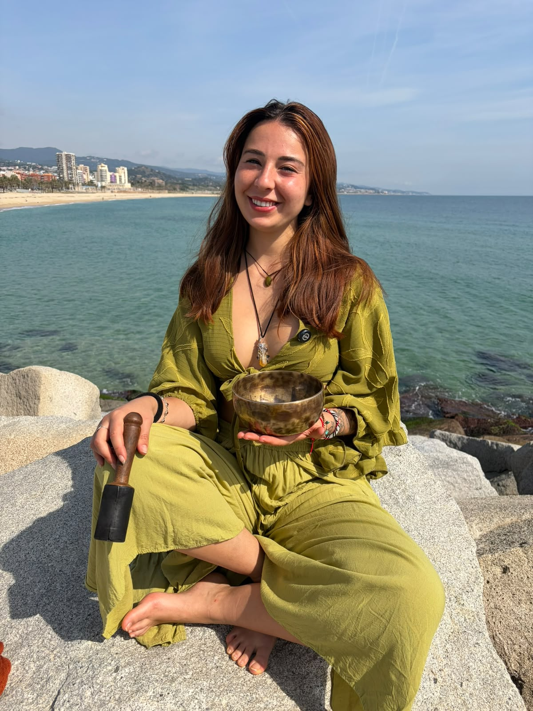

Sound Healing·Voz·Vibración·Presencia

Acompaño a las personas a reconectar consigo mismas a través del sonido, la voz y la vibración.
Creo espacios donde el cuerpo puede relajarse, la mente encontrar calma y el corazón abrirse a una escucha más profunda.
Cada sesión nace desde la escucha, la presencia y el cuidado, ofreciendo un lugar donde cada persona pueda simplemente ser.
Anna Cano
Mi relación con el sonido nació mucho antes de descubrir el Sound Healing.
Desde muy joven me formé en música clásica, desarrollando una sensibilidad especial hacia la voz, la escucha y el poder transformador de la vibración.
Con el tiempo comprendí que el sonido podía ser mucho más que música: podía convertirse en una herramienta para volver al presente, conectar con uno mismo y cultivar bienestar interior.
Esta búsqueda me llevó a formarme en Sound Healing en India y Tailandia, explorando la voz, la respiración y los instrumentos vibracionales como caminos hacia estados profundos de calma, equilibrio y reconexión.
Mi formación como Educadora Social me permitió comprender la importancia de crear espacios seguros, respetuosos y sostenedores.
Mundo
He compartido sesiones y experiencias de sonido en diferentes partes del mundo, llevando esta práctica a espacios íntimos, retiros y centros de bienestar.
También he colaborado con hoteles, retiros y espacios dedicados al bienestar y el crecimiento personal.
Herramientas
Durante las sesiones combino diferentes elementos para crear una experiencia inmersiva y transformadora. Cada encuentro es único y se adapta a la energía y necesidades del momento.
Voz terapéutica
Cuencos tibetanos
Instrumentos vibracionales
Respiración consciente
Meditación guiada
Presencia & escucha profunda
Estudios
Música & Voz
Formación en Música Clásica con especialidad en voz
Educación
Grado en Educación Social
Sound Healing
Formación especializada en Sound Healing en India y Tailandia
Desarrollo personal
Actualmente en formación en Terapia Gestalt
Intención
Mi intención es ofrecer experiencias que ayuden a disminuir el ruido externo para poder escuchar lo esencial.
Momentos de pausa.
Momentos de presencia.
Momentos para recordar que el bienestar, la calma y la conexión ya habitan dentro de nosotros.
❝ El sonido nos recuerda aquello que el corazón ya sabe. ❞